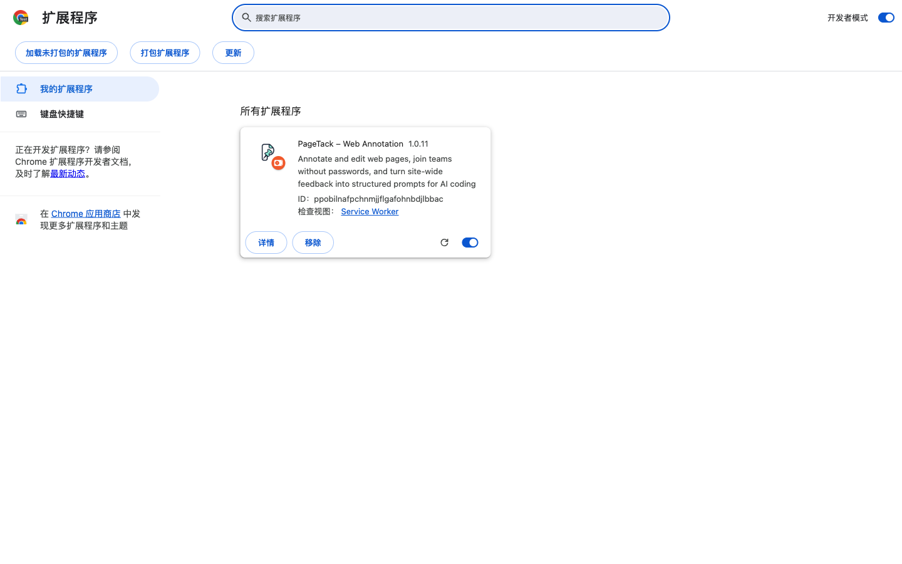
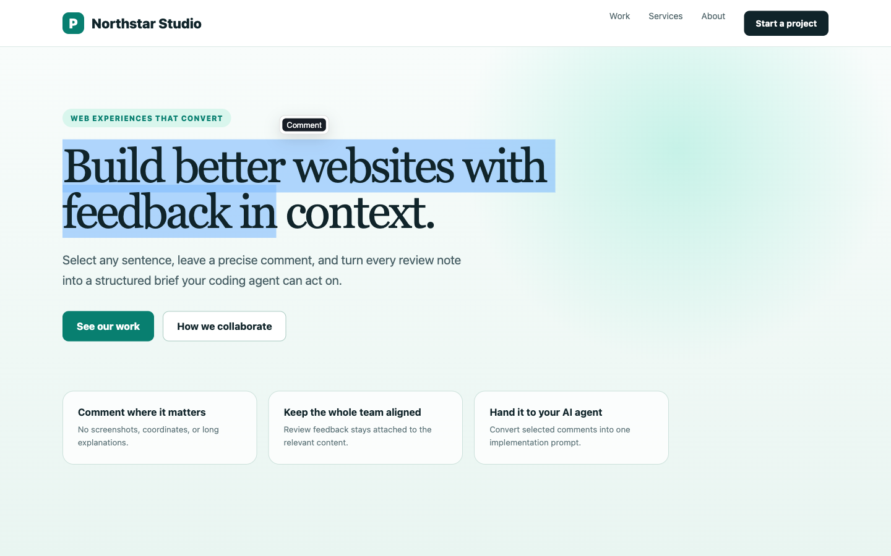
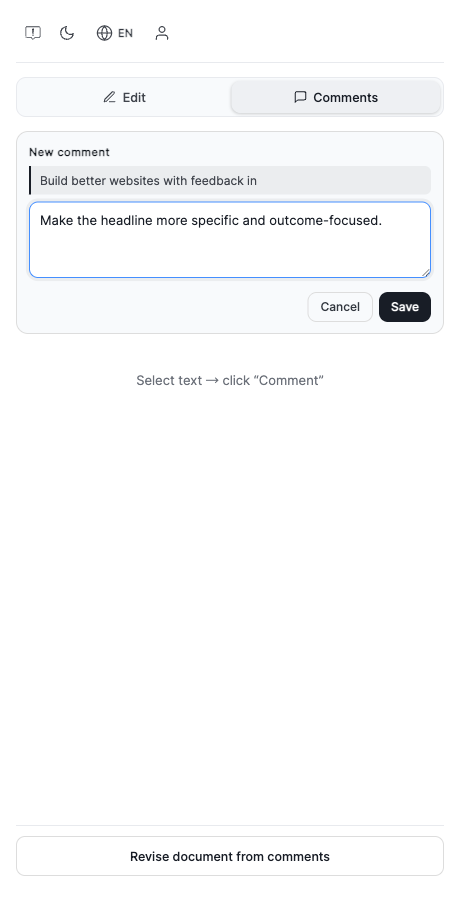
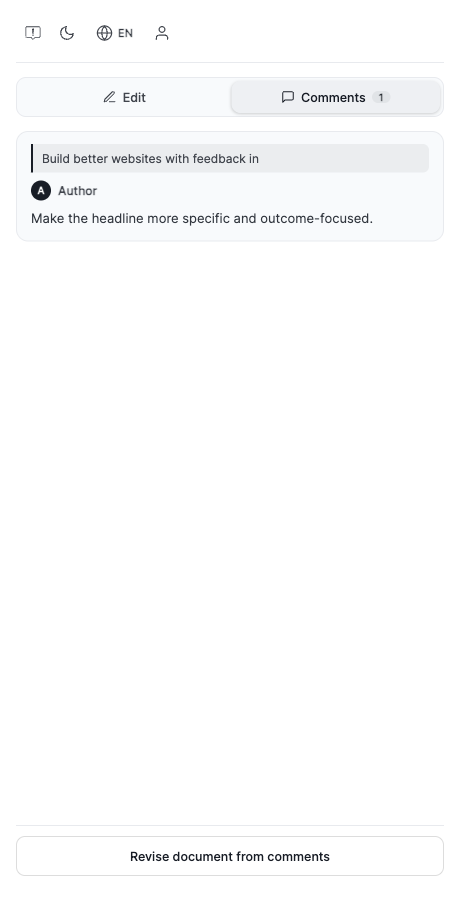
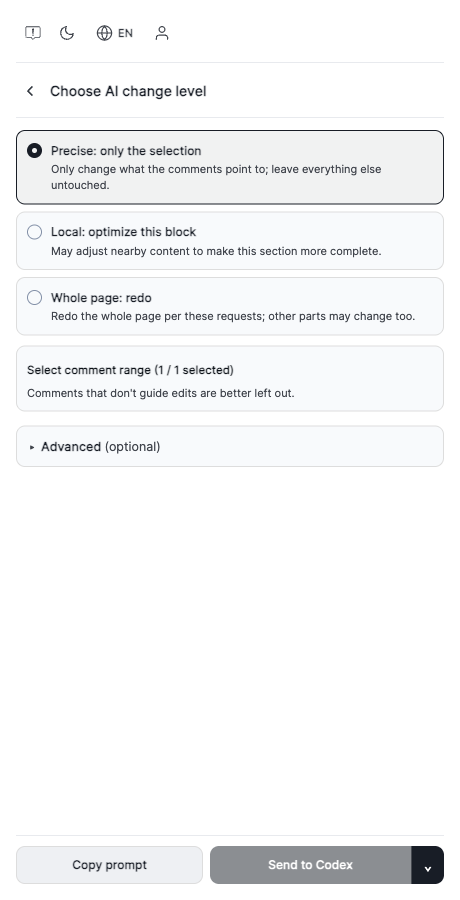

0
先准备正确的压缩包
测试包文件名应以 -local-test.zip 结尾。
- macOS：双击 ZIP 自动解压
- Windows：右键选择“全部解压”
- 保留解压后的整个文件夹
- 文件夹内应直接看到
manifest.json
不要直接选择 ZIP，也不要用商店上传包。请选择解压后的
PageTack-1.0.11-local-test 文件夹；商店包不带固定开发 ID，反复加载可能产生多个扩展副本。1
在 Chrome 加载扩展
只需安装一次，之后更新可以直接重载。
- 在地址栏输入
chrome://extensions/并回车。 - 打开右上角的开发者模式。
- 点击左上角加载已解压的扩展程序。
- 选择刚才解压、且里面直接包含
manifest.json的文件夹。 - 看到 “PageTack – Web Annotation 1.0.11” 且开关为蓝色，即安装成功。

建议点击 Chrome 右上角拼图图标，将 PageTack 固定到工具栏。打开要检查的网站后，点击 PageTack 图标即可打开右侧栏。
2
选择网页文字并添加评论
评论会和选中的原文绑定，不用再截图圈位置。
- 打开任意普通网页，并保持 PageTack 侧栏开启。
- 按住鼠标，从文字开头拖到结尾；正向或反向选择都可以。
- 松开鼠标后，点击选区附近出现的黑色 Comment 按钮。

右侧栏会出现一张 “New comment” 卡片。输入希望修改的内容，然后点击 Save。

推荐写法：“把标题改得更具体，并强调转化结果。” 比 “这里不好” 更容易让设计师或 AI 准确执行。
3
查看与管理评论
所有已保存的评论都会显示在 Comments 标签中。
评论卡片会同时显示选中的原文、作者和修改意见。继续在页面上选择其他文字，就能逐条补充；无需每写一条就刷新网页。

本地与团队的区别：未登录时，评论只保存在当前浏览器；登录并加入团队后，团队评论会同步到服务器，其他成员在同一网站也能看到。
4
批量整理评论，交给 AI 修改
点击侧栏底部的 “Revise document from comments”。
Precise: only the selection
只改评论指向的内容，其他部分保持不动。日常修订首选。
Local: optimize this block
允许调整附近内容，使当前区块更完整。
Whole page: redo
按全部意见重做整页，其他部分也可能变化。

- 选择修改级别，并勾选真正需要执行的评论。
- 有整站通用要求时，在 Advanced 中填写 Global prompt；绝不能变化的内容填入 “Anything that must not change?”。
- 点击 Copy prompt，粘贴到任意 AI；或在已配置本机 Agent 时使用 Send to Codex。
整站团队评论：登录团队后，PageTack 可以按当前网站域名从服务器读取未解决评论，再统一复制给 AI。未登录的本地评论只存在当前浏览器，后端无法直接读取。
5
以后收到新版测试包，如何更新
通常不需要频繁刷新网页。
- 解压新版
PageTack-x.x.x-local-test.zip。 - 打开
chrome://extensions/，找到 PageTack。 - 若仍使用原文件夹：替换文件后点卡片右下角圆形箭头；若使用新文件夹：移除旧测试扩展，再加载新文件夹。
- 关闭并重新打开 PageTack 侧栏。1.0.11 会自动接管已经打开网页里的旧脚本，多数情况下不需要刷新网页。
如果卡片显示的版本不是最新版，说明选错了解压目录，或浏览器仍加载着旧副本。先移除重复的 PageTack 测试扩展，再只加载一个正确文件夹。
?
常见问题
先按下表排查，通常一分钟内能解决。
| 没有出现 Comment | 确认选区仍是蓝色；页面不能是 chrome://、Chrome 商店等浏览器受限页面。重新打开侧栏后再选择一次。 |
|---|---|
| 提示 Select text first | 先在网页正文中拖选文字，松开后直接点选区旁的 Comment，不要先点击侧栏导致选区消失。 |
| 本地 HTML 不工作 | 进入扩展“详情”，开启允许访问文件网址；也可以用 http://127.0.0.1 本地服务器打开网页。 |
| 无痕模式不工作 | 进入扩展“详情”，开启在无痕模式下启用。Chrome 默认关闭此权限；无痕窗口的会话也可能需要重新登录。 |
| 新版行为没有生效 | 在扩展卡片点圆形箭头并重新打开侧栏；仍不生效时再对目标网页强制刷新一次。正常使用不需要反复刷新。 |
| 评论换电脑后不见了 | 未登录评论属于浏览器本地数据。需要跨设备或团队共享时，请登录并加入同一个团队。 |